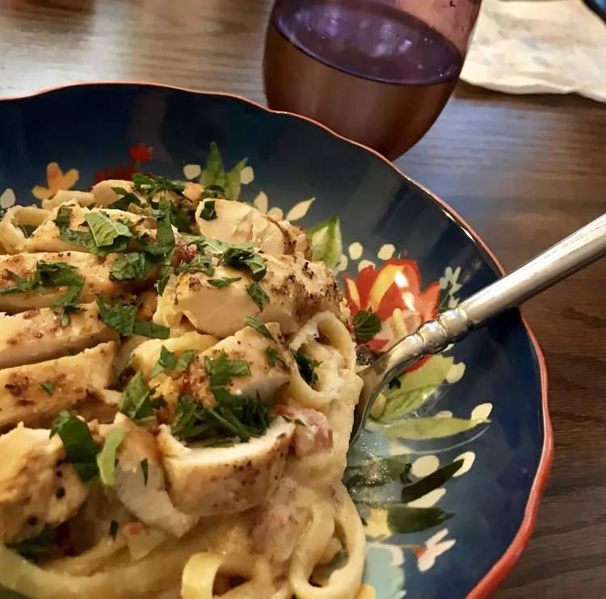

Chicken Milano

Description
A delicious pasta and chicken dish with garlic, sun-dried tomatoes and fresh basil. Use the dry packaged sun-dried tomatoes instead of the tomatoes packed in olive oil.
The sauce can be kept, covered, for one day in the refrigerator; heat again over low heat. Try it with some crusty bread if desired.
Ingredients
- 1 tablespoon butter
- 2 cloves garlic, minced
- ½ cup sun-dried tomatoes, chopped
- 1 cup chicken broth, divided
- 1 cup heavy cream
- 1 pound skinless, boneless chicken breast halves
- salt and pepper to taste
- 2 tablespoons vegetable oil
- 2 tablespoons chopped fresh basil
- 8 ounces dry fettuccini pasta
Steps
- In a large saucepan over low heat, melt butter; add garlic and cook for 30 seconds. Add the tomatoes and 3/4 cup of the chicken broth; increase to medium heat and bring to a boil. Reduce heat and simmer, uncovered, for about 10 minutes or until the tomatoes are tender. Add the cream and bring to a boil; stirring. Simmer over medium heat until the sauce is thick enough to coat the back of a spoon.
- Sprinkle the chicken with salt and pepper on both sides. In a large skillet over medium heat, warm oil and saute chicken. Press on chicken occasionally with a slotted spatula. Cook for about 4 minutes per side or until the meat feels springy and is no longer pink inside. Transfer to a board; cover and keep warm. Discard the fat from the skillet.
- In the same skillet, over medium heat, bring 1/4 cup chicken broth to a boil; stirring the pan juices. Reduce slightly and add to the cream sauce; stir in basil and adjust seasonings to taste.
- Meanwhile, bring a large pot of lightly salted water to a boil. Add fettuccine and cook for 8 to 10 minutes or until al dente; drain, transfer to a bowl and toss with 3 to 4 tablespoons of the sauce.
- Cut each chicken breast into 2 to 3 diagonal slices. Reheat the sauce gently if needed. Transfer the pasta to serving plates; top with chicken and coat with the cream sauce; serve.